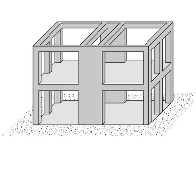

Dual frame-wall system [LDUAL]
The lateral load-resisting structure comprises of moment frames and shear walls acting together in the same direction, and it is mostly applicable to reinforced concrete structures. Due to wall slenderness, the structural system cannot be classified as a Wall system; however shear walls interact with the moment frames and resist seismic effects. The walls are usually solid (not perforated by openings) and they can be found around the stairwells, elevator shafts, and/or at the perimeter of the building. The walls may have a positive effect on the performance of the frames such as by preventing a soft storey collapse. Very slender walls of a dual frame-wall system may or may not have been designed for the level of earthquake forces that could be imposed upon them. Note that the dual frame-wall system is a Hybrid Lateral Load-Resisting System, however it has been identified as a separate system in this taxonomy. It may be difficult to distinguish a Dual system from the Wall system in a reinforced concrete building. The user will need to have additional information related to the building design and local building codes and design practices.

A simplified drawing of a dual frame-wall structure running in one direction (adapted from: A. Charleson, Seismic Design for Architects, Architectural Press 2008, p64 fig. 5.2). Beams must be present and not just slabs.


A typical reinforced concrete building with the frame-wall dual system, Greece (Tassios and Syrmakezis, World Housing Encyclopedia Report 15)


Dual frame-wall system is common for contemporary reinforced concrete building construction in Algeria (M. Farsi)


Reinforced concrete dual frame-wall construction, Chile (Moroni, Gomez, and Astroza, World Housing Encyclopedia Report 6)